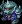

Shop and Purchase Rules
Although purchases in general are a non-action (compounds and variants being the exceptions), each shop section follows slightly different purchase rules. These are all explained here, followed by the lists of items.
An items Owner is ONLY the player on the items Owner tab.
"Limit 1" items may only be purchased once per player per update.
Compounds are purchased by making a Build action. Terrain is purchased with the Compound, and cannot be added after it is built.
Defenses and Add-Ons may only be purchased for a compound you Own, and may be purchased at any time, even if you are not on the compound.
You may purchase mobile weapons, WMDs or pilots at your position at any time, or for a base/ship/fleet if you are on it. You may also purchase mobile weapons, WMDs or pilots for a base/ship/fleet you Own at any time, even if you are not on it.
Ships may be purchased at your position or on a base that you Own at any time IF that position is Friendly Territory.
Services may only be purchased at your position, and may only be purchased in Friendly or Contested Territory. They are 1/2 price in Friendly Territory.
Variants may only be purchased for a unit by its Owner, and it requires a Refit action. Soft refits can be made anywhere, but Hard refits must be made on compounds.
Compounds and Compound Accessories
Compounds
Compounds, which consist of Facilities and Installations, may be purchased through a build action, and consist of any stationary defensive location. Fortresses and Fortress equipped colonies count as Installations and can control territory, while the rest of the compounds count as Fortifications and cannot control territory. All compounds must have a Terrain chosen from the Terrain list.
Only up to four Compounds at a given Position will produce income.
Ruin
Even the most powerful defensive position in history at some point turns to rubble due to war, deceit, or the passage of time. Every compound that is destroyed becomes a Ruin, which retains its terrain bonuses and can still field a small fighting force. Ruins do not contest or control territory, but can still be moved to as a seperate position, and can be rebuilt back to a Fortification in the same area.
-
- Standard defenses: None, max. 0
- Built-in accessories: Makeshift HQ
- Hangar capacity: 1x infantry, 2x mobile suits, 1x vehicle, 1x mobile armor.
- Income: None
- Restrictions: Ruins count as the grade of territory of the Location they reside in, and may not purchase add-ons other than minefields, trenches and listening posts.
- Cost: N/A, created as the result of a destroyed compound
- Special: Ruins can be rebuilt into a Fortification for a build action and 275 RP.

Derelict Colony
Hundreds of space colonies were destroyed in the early weeks of the war, and while most are now only floating debris, a few remain as monstrous hulks, possibly with a few areas still pressurized. These derelicts can be important tactical positions to a military, which can hide ships inside the colonies or their monstrous shadows. Derelicts can be purchased, but may also be created as the result of a destroyed Colony, much like Ruins.
-
- Standard defenses: None, max. 2
- Built-in accessories: Damaged Mirrors, Damaged Hydroponics, Damaged Propulsion System, Ship Dock, Makeshift HQ
- Hangar Capacity: 1x infantry, 6x mobile suit, 8x vehicle, 2x mobile armor
- Income: None
- Restrictions: Only purchasable at Sides 1, 2 or 4. May not purchase add-ons other than minefield and listening post.
- Cost: 200 RP
- Special: Derelicts may be repaired into functional colonies for a build action and 800 RP. Derelicts may be purchased two at a time in a bunch formation for 375 RP.
Fortification
In essence, a mini-base. These are little more than a hanger for mobile suit placement, and an airfield. They have no walls guarding it, no heavily armored buildings, etc, but are good for the economist, or somebody wanting a cheap, quick, stopgap measure to guard something.
-
- Standard defenses: None, max. 20x
- Built-in accessories: Airfield, Hangar, Barracks, Cellblock, Radar/Communications Tower, HQ, Port if Coastal/Island/Naval
- Hangar capacity: 4x infantry, 8x mobile suits, 10x vehicle, 2x mobile armors
- Income: 40 RP
- Cost: 300 RP
- Special: Fortifications can be upgraded to a Fortress with a second Build action.

Mine
The Mine is a fairly straightforward operation, yet it is an excellent money maker. Mines are built and deployed on their own, or attached to a Fortress as an add-on. They slowly suck minerals, Helium 3, ore, Vespine Gas, crude oil, Tiberium, or whatever other local asset out of the ground, and bring income to it's owner.
-
- Standard defenses: None, max. 5x
- Built-in accessories: Mining Compound, Airfield, Hangar, Barracks, Radar/Communications Tower, HQ
- Hangar Capacity: 2x infantry, 4x mobile suits, 1x vehicle, 1x mobile armor
- Income: 80 RP
- Cost: 300 RP
- Special: One Mine can be purchased on an existing Fortification or Fortress as an add-on for a build action.

Asteroid Mine
An asteroid half the size of a colony, this is a true symbol of economic might. Passages colonize its interior, making it easy to mine valuable ores from inside. Due to the activity on a mine, few fixed defenses can be placed on an active Mine, but you can always move one Asteroid Mine to orbit around a friendly colony for protection.
-
- Standard defenses: None, max. 5x
- Built-in accessories: Mining Tunnels, Hangar, Ship Dock, Barracks, Comm Room, HQ, Propulsion System
- Hangar Capacity: 2x infantry, 4x mobile suits, 5x fighter, 1x mobile armor
- Move Rate: 1/4th normal
- Income: 80 RP
- Cost: 350 RP
- Special: One Asteroid Mine can be purchased to orbit an existing Space Colony for a build action.
Fortress
The Gundam equivalent of a military base, a Fortress is a symbol of power wherever it is constructed and allows you to control the nearby terrain. A Fortress is essentially a group of factories, warehouses, barracks, hangars and such surrounded by a large, thick concrete wall. Fixed defenses can be purchased as well to increase the ability of your base to survive an attack.
-
- Standard defenses: None, max. 40x
- Built-in accessories: Outer Wall, Repair Bay, Airfield, Hangar, Barracks, Cellblock, Radar/Communications Tower, HQ, Port if Coastal/Island/Naval
- Hangar Capacity: 10x infantry, 25x mobile suits, 40x vehicle, 5x mobile armor
- Income: 120 RP
- Cost: 900 RP
- Special: Fortresses can only be built with a build action on an existing Fortification.
Mirrored Space Colony
This sixty-kilometer long cylinder is home to five million people. Inside, people go about their daily lives as though they were on Earth. Although designed to house a civilian population, space colonies can be equipped with a small defensive armament, and have a large hangar. While a Facility normally, a Fortress can be built inside a Space Colony, upgrading it to an Installation.
-
- Standard defenses: None, max. 10
- Built-in accessories: Reflective Mirrors, Hydroponics bays, Propulsion System, Repair Bay, Hangar, Barracks, Ship Dock, HQ, Comm Room
- Hangar Capacity: 4x infantry, 17x mobile suits, 20x vehicle, 3x mobile armor
- Move rate: 1/4th normal
- Income: 120 RP
- Restrictions: Only purchasable at Sides 1, 2 or 4
- Cost: 1,000 RP
- Special: Space colonies can be purchased two at a time in a bunch formation for 1,750 RP. A Fortification may be built on a Mirrored Space Colony.
Sealed Space Colony
Similar to the standard colony, the "Sealed" colony was build primarily in the Zeon homeland of Side Three. Unlike a conventional colony, the Zeon Sealed Colonies had no windows, enabling them to house up to ten million people, while light was provided giant fluorescent arrays. These make the Sealed Colony more expensive to construct, but make it more difficult to destroy in general, as there are no weak windows to aim for. All other aspects are the same as a regular colony.
-
- Standard defenses: None, max. 10
- Built-in accessories: Solar Panels, Hydroponics bays, Propulsion System, Repair Bay, Hangar, Barracks, Ship Dock, HQ, Comm Room
- Hangar Capacity: 4x infantry, 17x mobile suits, 20x vehicle, 3x mobile armor
- Move rate: 1/4th normal
- Income: 120 RP
- Restrictions: Only purchasable at Side 3
- Cost: 1,100 RP
- Special: Sealed colonies can be purchased two at a time in a bunch formation for 1,900 RP. A Fortification may be built on a Mirrored Space Colony.
Terrain
Each Compound must be built with a type of Terrain. While standard and coastal are free and make limited changes to the compound, there are also more expensive options that can deter enemy units, such as Desert or Arctic. Some bases must have a paid-for option to be placed in a specific area, such as Naval or Island for a compound in an ocean sector. You can buy combinations of terrain, but some combinations aren't allowed. Please use common sense.

Standard
Built in a normal, pleasant or temperate environment on the plains, steppe or rolling hills, these fortresses are often the cheapest to construct and maintain, but do not offer the geographical bonuses of other options. In the case of Space Colonies and Asteroid Mines, this is the normal option.
-
- Advantages: None
- Disadvantages: None
- Cost: Free

Coastal
Built into the coast, these fortresses include a harbor for tendering marine vessels and controlling the seas. Although this will increase the number of theatres your fortress can effectively support, at the same time it will increase the number of ways in which it can be attacked.
-
- Advantages: Naval ships can move to and be repaired on a Coastal base.
- Disadvantages: Allows the base to be amphibiously assaulted.
- Cost: Free
Arctic
In order to facilitate your rule in frozen tundra type areas, these specialized fortresses will be necessary. Outfitted with much more insulation on structures, better anti-freeze systems and other such details, fixed defenses can function well enough here, but performance of mobile suits and mobile armors will be hampered. Defending player-controlled mobile suits and armors can be outfitted with gear to survive such an environment, though only specialized grunt suits can operate at peak efficiency.
-
- Advantages: Cold Climate mobile suits can work wonders here while other, standard-issue suits will take a beating.
- Disadvantages: Only Cold Climate grunt suits can work at peak efficiency here. Standard mobile suits will grind to a halt in the cold.
- Cost: 50 RP
Desert
In need of extra cooling systems and other such gear, fortresses in desert climates and on barren worlds will need these extra outfittings. Again, defending player-controlled mobile suits can be outfitted with gear to survive the extreme environment, but only specialized mobile suits operate at peak efficiency.
-
- Advantages: Mobile suits designed for these extreme environments work well here.
- Disadvantages: Sand can badly clog up vents and weapons on conventional mobile suits and mobile armors.
- Cost: 50 RP
Sealed
Cities on moons and the martian surface are semi-underground, buildings built on the surface with extensive basements connecting them, and the entire complex sealed from the inhospitable void outside. Most cities on the moon are built around craters, which facilitate this kind of building perfectly. These cities, and cities that are completely underground, are the only possible way to build a habitable settlement on the lunar or martian surface.
-
- Advantages: Allows the compound to be built on a moon or Mars.
- Disadvantages: Accidental explosions can cause depressurization easily.
- Cost: 50 RP

Tropical
In need of extra radiators and other such gear, tropical and heavily forested climates spell trouble for mobile suits. Defending player-controlled mobile suits can be outfitted with gear to prevent moisture and undergrowth from damaging systems, but only specialized mobile suits operate at peak efficiency.
-
- Advantages: Mobile suits designed for these extreme environments work well here.
- Disadvantages: Moisture can badly damage electronics and weapons on conventional mobile suits and mobile armors.
- Cost: 50 RP
Island
Built on top of a small island with the coast as perimeter defenses, these fortresses are difficult to get on or off of. Attacking units will find the combination of having to cross the water to fight on land aggravating, whereas defending units will find retreat an equally difficult option.
-
- Advantages: Attacking mobile suits will have to move across water or air to assualt the base. Non Hovercraft Land Battleships cannot move to this base.
- Disadvantages: The islands small size will make it more susceptible to bombing, and retreat will be difficult.
- Cost: 100 RP

Mountain
Built into the side of a mountain, mountain fortresses are almost as hard to capture as underground bases, though easier to destroy. Attacking mobile suits will have to scale the mountain itself all the while being hailed by machine gun and mega particle cannon fire. Also, thanks to thinning atmosphere, aircraft cannot function with their usual lethality.
-
- Advantages: Enemy aircraft will be restricted and land forces will advance more slowly.
- Disadvantages: Your own aircraft will have a hard time due to thinning atmosphere.
- Cost: 200 RP

Urban
Genocidal maniacs love this little ditty, your base is built right in the middle of a massive city! Maneuvering is hard, firing without hitting civilians is harder, and battles will look like the first episode of Robotech. If combined with an underground base, you could literally create the most advanced base in the history of Anime. Yes, NERV is now at your disposal.
-
- Advantages: The city this base is placed inside produces an income, much like a mine, and the buildings provide good cover for friendly units.
- Disadvantages: To put it bluntly, the civilians will hate you.
- Income: +40 RP
- Cost: 250 RP
Naval
Essentially a gigantic ship, a floating Naval Fortress floats on the surface of the ocean, either anchored to the ocean floor, right along the edge of a beach, or mindlessly wandering the seven seas. From here, submarines, marine mobile suits and marine mobile armors can call home.
-
- Advantages: These fortresses make controlling the seas much more feasible and make attack from conventional mobile suits nearly impossible. Non-Hovercraft Land Battleships cannot move to this Fortress.
- Disadvantages: The large pontoons that keep these structures afloat are excellent targets for mobile armors and submarines that manage to get close enough.
- Note: Naval compounds can move anywhere a Naval ship can move at a 1/4 rate.
- Cost: 300 RP
Space
Large floating spacedocks lacking gravity, a handful of these were made prior to the construction of the space colonies, facilitating the original migrations to Jupiter and the Asteroid Belt. While they have served their purpose economically, Space Fortresses have a new niche as military bases, cheaper to construct than building a fortress inside of a space colony.
-
- Advantages: More compact than a space colony and entirely a military installation, it is much more difficult to infiltrate this fortress than a space colony with a military base inside it.
- Disadvantages: The lack of gravity, as well as lack of size, can cause problems with allied forces.
- Note: Space Fortresses can move at 1/4th the normal movement rate.
- Cost: 300 RP

Atmospheric
Using multiple Minovski-craft compressors, much like those used on Zeon airborne mobile armors, it is possible to levitate a fortress in orbit, allowing it reign over the wild blue yonder. Halfway between space and earth, an Atmospheric Fortress is excellent for monitoring movement on and off a planet.
-
- Advantages: Because of its altitude, the number of enemy units that can actually attack such a base is very limited. Air units cannot fly high enough, and Space units will be fighting dangerously close to terminal descent elevations.
- Disadvantages: Like the floating Naval Fortress, the Minovski craft compressors are good targets.
- Cost: 500 RP

Underground
Perhaps one of the hardest to attack fortresses available, an underground fortress is built completely underground, save for a few camouflaged gates. Pop-up accessories are added to all fixed defenses, allowing them to pop-up out of the ground and surprise enemy units. Even if enemy units manage to locate the entrances to an underground fortress, it will still be hard to take through winding passages and tight corridors.
-
- Advantages: These bases CANNOT be destroyed by anything less than a well-placed tactical nuclear warhead or a full-blown colony drop.
- Disadvantages: There's only one really... Cost! These fortresses are expensive.
- Cost: 750 RP
Combo
Multiple base locations can be purchased at one time for a compound, although some combinations (Airborne+Underground?) are impossible. Don't be a jackass.
Add-ons
While compounds come with their own integral hangars, HQ bunkers and what have you, additional and more sophisticated buildings can be purchased at additional price. These add-ons can be targetted and destroyed by enemy attack, and while integral features of a base can be repaired, add-on features must be repurchased.

Minefield
A simple field of explosive proximity mines, this can be used to delay an enemies advance into a fortress. There are three types of minefield, land mines, underwater mines and space mines, and each must be purchased seperately. Minefields can be purchased while your compound is under siege, albeit at double price.
-
- Note: May be underground, underwater or in space, terrain permitting
- Cost: 150 RP (300 if sieged)

Listening Post (D)
A small outpost at the edge of a bases controlled area, designed as an early warning system against attack. Usually not armed, these posts seek to deter scouts and surprise attacks on the base proper.
-
- Effect: Acts as a detector unit. (D)
- Cost: 200 RP
Perimiter Wall
An outer wall designed to repel a first wave of attack, this add-on enlarges the effective area of a compound, allowing for more defensive emplacements. If purchased for a Space Colony or Asteroid, this in effect redesigns the colonies hull for military use.
-
- Effect: +10 maximum defenses.
- Cost: 200 RP

Trenches
Simple and affordable, mobile suit sized Trenches can be constructed to give your MS defenses just a little bit more surviveability. Unlike most things, Trenches can be purchased while your compound is under seige, albeit at double price.
-
- Note: May be underground, terrain permitting
- Cost: 200 RP (400 if sieged)
Enlarged Barracks
Even though the glory of combat has gone to the mobile suit, infantry can still make a difference, ground forces being required to maintain control of an area or capture an enemy ship. Large bases will increase the size of their barracks, incorporating more security personnel.
-
- Effect: Maximum hangar space +10 infantry.
- Cost: 250 RP
Enlarged Cellblock
While all fortresses carry simple cellblocks, these can be enlarged to make it much more difficult for a captured pilot to escape. This add-on functions as a normal Cellblock where none exist naturally.
-
- Cost: 300 RP

Hospital
All fortresses have clinics where front lines doctors patch the injured up as best they can, but few can boast actual military hospitals. These buildings will assist in tending to the wounded, keeping people fighting even during a long siege.
-
- Effect: Reduces all PCs injury times by 1 while on the compound.
- Cost: 300 RP (200 on Urban)
Enlarged Hangar
Extremely important locations will enlarge and add secondary hangars, to increase the number of servicable units in their territory.
-
- Effect: Maximum hangar space +10 mobile suits and +10 tanks/fighters.
- Cost: 400 RP

Targeting Facility
A complex radar, sonar, infrared and audio tracking station, these facilities stay in the fairly safe portions of a land Fortress for protection and to provide targeting data to friendly turrets, improving their accuracy.
-
- Cost: 400 RP

Colony Booster
To move your colony quicker or to initiate a colony drop, you need one of these boosters. Simply a large rocket that latches onto the backside of your colony, the Booster is an essential part of all colony movement and allows your colony to move at half the speed of a regular mobile suit, rather than one fourth.
-
- Cost: 750 RP

Spaceport
Necessary for construction on terrestrial fortresses, the Spaceport allows regular space warships and mobile suits to land, refuel, and be equipped with single-use boosters to get back into space again, allowing otherwise space-bound vessels and mobile suits to enter Earth. Spaceports may be purchased for a Lunar fortress, but are not necessary for a ship to escape the moons gravity well.
-
- Income: +40 RP
- Cost: 1,000 RP

War Factory
The War Factory, once constructed, can harvest the resources needed and then produce any product in the shop. How many can be produced in a one-week production run is based on cost. A War Factory is somewhat different from a mine, as it produces weaponry even during a siege.
-
- Effect: The factory is credited 500 RP every Sunday, which can be used at any time to purchase shop materials at the factories location. Remaining RP is stockpiled until spent.
- Cost: 2,000 RP
Nuclear Charge
The ultimate in "Base Insurance," this is actually an Inter-Continental-Ballistic-Missile with the rocket section removed and stripped down to the bare essentials. This charge sits in the middle of a Fortress in wait to be activated. After the entire base's defenses have been destroyed, this charge is activated and will detonate when a mobile suit, tank, or even infantry triumphantly march into the base.
-
- Cost: 3,000 RP
Defenses
Clearly even the best base will fall eventually without its own defensive armament. Turrets and gun emplacements can be purchased up to a bases defensive emplacement maximum, to assist in defending the area. (A) marked defenses cannot make All Range Attack actions, but will shell enemy fleets during a siege.
AA machine gun turret
While only remotely effective against mobile suits, these open-ended turrets are inexpensive and excellent against fighter aircraft.
-
- Armament: Four-barreled 45mm rapid-fire machine gun
- Effective VP: 16 (32 with targetting facility)
- Cost: 7 RP
Depth Charge launcher
For anti-submarine warfare, the Depth Charge launcher is the best there is.
-
- Armament: Two-tube Depth Charge discharger
- Effective VP: 16 (32 with targetting facility)
- Cost: 14 RP

SAM battery
A small AA missile turret, this is more effective than a machine gun turret, but runs out of ammunition quickly.
-
- Armament: Four-tube SAM missile launcher (10 rounds)
- Effective VP: 16 (32 with targetting facility)
- Cost: 14 RP
Cannon turret
A cheap, conventional ground to ground cannon turret.
-
- Armament: Two-barreled 180mm cannon
- Effective VP: 16 (32 with targetting facility)
- Cost: 21 RP
MPC turret
Small, fast tracking Mega Particle gun for taking out mobile suits, the ultimate in AA technology.
-
- Armament: 2-barrel Mega Particle Cannon
- Effective VP: 16 (32 with targetting facility)
- Cost: 70 RP

Asteroid Rocket Cluster
A cluster of asteroids equipped with rockets, harmless until propelled towards a large target.
-
- Armament: 20x Asteroid Rocket
Note: These clusters do not count towards the total defenses amount, but are limited to three per location. Purchasable in space only.
- Effective VP: 16 (32 with targetting facility)
Cost: 84 RP

Howitzer (A)
The ultimate in artillery weaponry, the Howitzer is perfect for anti-Siege warfare.
-
- Armament: 880mm rifled howitzer
- Effective VP: 16 (48 with targetting facility)
- Cost: 140 RP

Large MPC (A)
A large, slow moving, anti-ship Mega Particle Cannon, this packs a punch, but has a slow rate of fire compared to the Howitzer.
-
- Armament: Two-barreled Large Mega Particle Cannon
- Effective VP: 16 (48 with targetting facility)
- Cost: 210 RP

Space defense Platform
Built into an Asteroid, this is the best thing you can get for defending a space-based location.
-
- Armament: 12x 2-barrel beam gun turret, 2x heavy rocket launcher turret
- Note: These platforms do not count towards the total defenses amount, but are limited to four per location. Only buildable in space.
- Effective VP: 32 (48 with targetting facility)
- Cost: 315 RP
Extended Range Laser Cannon (A)
Designed to take out a target at long range, these delicate anti-ship cannons are accurate at much longer ranges than an MPC.
-
- Note: Only buildable in space.
- Armament: Long range laser cannon.
- Effective VP: 16 (48 with targetting facility)
- Cost: 525 RP
Mobile Weapons
Ships, Compounds and players MS Teams have hangar slots, which can be filled with different mobile weapons. A hangar is divided into the following different kinds of slots: Cargo, Infantry, Tank, Aircraft, Vehicle, Mobile Suit and Mobile Armor. Each mobile weapon takes up a slot, but certain unit types can only go in certain slots. Use the following scale for referencing what items can go where.
Cargo - Any slot
Infantry - Any slot but Cargo
Tanks - Tank, Vehicle, Mobile Suit, Mobile Armor
Aircraft - Aircraft, Vehicle, Mobile Suit, Mobile Armor
Mobile Suit - Mobile Suit, Mobile Armor
(L) Mobile Suit - 2x Mobile Suit, Mobile Armor
Mobile Armor - Mobile Armor
Infantry

Marines
No amount of technological advancement will replace the footsoldier. Although most effective against enemy infantry, crack marines have been known to kill a mobile suit on occasion.
-
- Unit size: 12 marines
- Equipment: Walther P99, Grenades
- Optional Equipment: XM8, HK MG4, PZF 3
- Combat Ability: 22 CP per level
- Cost: 7 RP
Panzergrenadiers (Limit 1)
Elite shock troops and honor guards of the SS, Panzergrenadiers are trained to fight without mercy both in atmosphere or the vacuum of space.
-
- Unit size: 6 Panzergrenadiers
- Equipment: Panzergrenadier Armor, Steyr TMP, Grenades
- Optional Equipment: XM8, MG3, PZF 3
- Combat Ability: 28 CP per level
- Cost: 34 RP
- Note: Only SS players may purchase or control Panzergrenadiers.
Tanks
Magella Attack Tank
A bizarre tank with heavy weapons and a flight-capable turret.
-
- Fixed armaments - 175mm cannon, 3-barrel 35mm machine gun, 8x Grenade launcher (1 round)
- Optional armaments - Explosive or smoke grenades.
- Optional equipment - none
- Cost: 14 RP
Aircraft
Dopp
An extremely fast and maneuverable aircraft with guns, missiles, and horrible loiter time, Dopps are much more effective than Federation Tin Cods.
-
- Fixed armaments - 2x 6-tube mini-missile launcher (2 rounds), 2x 20mm vulcan
- Optional armaments - none
- Optional equipment - none
- Cost: 14 RP
Dodai YS
It's flat. Designed to deliver mobile suits into combat and provide missile support against ground targets.
-
- Fixed Armaments - 8x Missile launchers (10 rounds each)
- Optional Armaments - none
- Optional equipment - none
- Cost: 16 RP
Dodai II
Faster and featuring better armor than the original, it serves exclusively to give mobile suits flight.
-
- Fixed Armaments - 2-barrel 20mm gun turret
- Optional Armaments - 2x Hardpoint, can mount external fuel cells or bombs
- Optional equipment - none
- Cost: 19 RP
Gattle
An old model at this point of the war, the Gattle is primarily used to defend colonies and other strategic objects.
-
- Fixed armaments - 4x 40mm nose vulcans, 2x 5-tube missile launcher (1 round)
- Optional armaments - 4x large rocket
- Optional equipment - none
- Cost: 26 RP
Gunship Heli
Modeled after the Kamov Ka-50; features thick armor, heavy weapons, and dual contra-rotating blades.
-
- Fixed Armaments - 6-barrel 60mm Gatling, 2x 16-tube mini-missile launcher (1 round), 8x missile
- Optional Armaments - none
- Optional equipment - none
- Cost: 21 RP
Luggun (D)
An unusually-shaped plane with a light armament and dual AWACs dishes.
-
- Fixed Armaments - 2x 2-barrel 30mm gun turret, 4x 20mm nose vulcans
- Optional Armaments - none
- Optional equipment - none
- Cost: 35 RP
Mobile Suits
Generic Use Mobile Suits
These mobile suits are designed to operate in all environments with relatively equal effectiveness. All mobile suits have anti-personnel weapons which are not listed.

Zaku II F
Basic Zeon mobile weapon suitable for space and terrestrial combat.
-
- Fixed Armaments - None
- Optional Armaments - 120mm Zaku II machine gun (100 round magazine), 280mm Zaku bazooka (4 round magazine), heat hawk
- Optional Equipment - grenades (3)
- Cost: 35 RP.

Zaku I B
Although no longer in production, many Zaku I's are still in service throughout the ZMF.
-
- Fixed Armaments - none
- Optional Armaments - 105mm Zaku I machine gun (100 round magazine), 280mm Zaku bazooka (4 round magazine), heat hawk
- Optional Equipment - puncher shield, grenades (3)
- Cost: 52 RP
Zaku II F2
An upscaled version of the original Zaku II F, incorporating many new features
-
- Fixed Armaments - None
- Optional Armaments - 120mm Zaku II machine gun (100 round magazine), MMP-80 90mm machinegun (32 round clip +1 grenade),
280mm Zaku bazooka (4 round clip), heat hawk
- Optional Equipment - grenades (3)
- Cost: 70 RP

Dom/Rick Dom
Highly maneuverable heavy assault mobile suits, also suitable for both terrestrial and space combat.
-
- Fixed Armaments - Scattering beam gun
- Optional Armaments - 360mm Giant bazooka (5 round magazine), 90mm MMP-80 (32 round magazine), Heat saber
- Optional Equipment - none
- Cost: 140 RP

Dom Funf
Second-generation Dom for both space and terrestrial warfare; improved thrusters, armor, weaponry, and with several variants.
-
- Fixed Armaments - Scattering beam gun
- Optional Armaments - 360mm giant bazooka Mk. II(5 round magazine), heat saber, MMP-80 90mm machinegun (32 round magazine +1 grenade), panzer fausts (4)
- Optional Equipment - none
- Cost: 400 RP
Gelgoog
The final solution to the Federation V project, the Gelgoog is very high performance and the first Zeon mobile suit to arm beam weaponry.
-
- Fixed Armaments - 2x forearm hardpoint, mounts either 110mm gatling or additional verniers
- Optional Armaments - beam rifle (20 round charge), beam saber
- Optional Equipment - shield
- Cost: 400 RP
Space Use Mobile Suits
Although operable on land, these mobile suits are designed specifically for space warfare, and many additional thrusters, verniers and design features will be useless in a terrestrial theatre.
Zaku Kai
Faster and better armored Zaku with a host of improved weapons, but poor fuel efficiency.
-
- Fixed Armaments - None
- Optional Armaments - MMP-80 90mm machinegun (32 round magazine +1 grenade), 280mm zaku bazooka (4 round magazine), heat hawk
- Optional Equipment - grenades (3)
- Cost: 54 RP
Zaku II HMT
Premier space combat mobile suit prior to the Rick Dom II; features grossly overpowered engines and better armor.
-
- Fixed Armaments - None
- Optional Armaments - 120mm machine gun (100 round magazine), 280mm zaku bazooka (4 round magazine), heat hawk, sturm fausts (2)
- Optional Equipment - none
- Cost: 112 RP
Rick Dom II
New and improved Dom exclusively for space warfare; features stronger thrusters, external fuel tanks, and better weaponry.
-
- Fixed Armaments - Scattering beam gun
- Optional Armaments - 360mm giant bazooka Mk II (5 round magazine), Heat saber, MMP-80 90mm machinegun (32 round magazine +1 grenade)
- Optional Equipment - 2x external fuel tank
- Cost: 270 RP
Land Use Mobile Suits
Although a pilot could wear a normal suit and fight with these units in space, they become effectively stationary turrets, not mounting the directional thrusters and verniers necessary for space combat.
Zaku II J
Zaku variant explicitly for a terrestrial theatre; slightly faster than the F-type due to lesser weight.
-
- Fixed Armaments - None
- Optional Armaments - 120mm Zaku machine gun (100 round magazine), 280mm Zaku bazooka (4 round magazine), heat hawk, 2x 3-tube leg missile launchers (1 round)
- Optional Equipment - cracker grenades (3)
- Cost: 37 RP
Zaku Cannon (A)
Zaku modified for anti-mobile suit and bombardment use with a large cannon and heavy weapons.
-
- Fixed Armaments - 180mm detachable cannon (20 rounds), 2-tube smoke discharger (1 round)
- Optional Armaments - 120mm Zaku machine gun (100 round drum), 2x 3-tube leg missile launchers (1 round), 2x 2-tube arm missile launchers (1 round)
- Optional Equipment - grenades (3)
- Cost: 51 RP

Gouf
Second generation mobile suit designed for dominating the terrestrial theatre.
-
- Fixed Armaments - heat rod, 5-barrel 75mm machine gun
- Optional Armaments - 280mm Zaku bazooka (4 round magazine), heat sword
- Optional Equipment - shield
- Cost: 70 RP
Harsh Climate Mobile Suits
These units are designed specifically for use in Arctic, Desert and Tropical locales, being immune to the severity of the elements that would damage or reduce the effectiveness of other mobile weapons.
Desert Zaku
J-type Zaku modified for arid environments with sand filters, a huge external radiator in place of its backpack, and substantial weapons.
-
- Design Features - Desert Theatre Gear
- Fixed Armaments - 2x 40mm head vulcan
- Optional armaments - 120mm Zaku machine gun (100 round drum), 280mm Zaku bazooka (4 round magazine), heat hawk, 2x 3-tube leg missile pod (1 round)
- Optional Equipment - Jet skis, grenades (3)
- Cost: 51 RP
Marine Mobile Suits
These mobile suits are designed either for underwater combat, amphibious assaults, or some combination of the two. While most land use units are next to useless underwater, these have full maneuverability in an aquatic battle.

Acquy (S)
Cheap marine mobile suit built mostly from recycled Zaku components; designed for covert ops.
-
- Fixed Armaments - 4x 105mm head vulcan, 5x Claw, 6x torpedo launcher (1 round), 1x mega particle gun
-
- Optional Armaments - none
- Optional Equipment - none
- Cost: 105 RP.

Gogg
Portly amphibious mobile suit with heavy weapons and armor; only intended for brief sorties on land.
-
- Fixed Armaments - 2x mega particle gun, 2x torpedo launcher (2 rounds), 10x Claw
- Optional Armaments - 2x large torpedo, mounts on back
- Optional Equipment - none
- Cost: 140 RP
Hygogg
Offshoot of the Gogg, correcting most of the original's numerous flaws.
-
- Fixed Armaments - 2x improved mega particle gun, 4x torpedo launcher (1 round), 10x Claw
- Optional Armaments - 2x large rocket, mounts on hands
- Optional Equipment - booster unit
- Cost: 225 RP
Z'Gok
Improved marine mobile suit designed for amphibious assaults; includes beam and anti-warship weapons, among other things.
-
- Fixed Armaments - 2x mega particle cannon, 6x rocket launcher (5 rounds), 6x Claw
- Optional Armaments - None
- Cost: 240 RP
Z'Gok E
Top-of-the-line marine mobile suit; virtually undefeatable in its home element and just as dangerous on land.
-
- Fixed Armaments - 2x improved mega particle cannon, 6x torpedo launcher (2 rounds), 6x Claw
- Optional Armaments - None
- Optional Equipment - Booster unit
- Cost: 315 RP
Specialty Mobile Suits
These units are designed for a specific role in mind, and excel at that role while being ill equipped for standard warfare.
Zaku II E (D)
Unarmed, highly mobile Zaku variant exclusively used for gathering information against enemy positions.
-
- Fixed Armaments - none
- Optional Armaments - none
- Optional Equipment - camera gun, shield, 2x external fuel tank, grenades (3, explosive or smoke)
- Cost: 140 RP
Xamel (A) (L)
Large, heavily armed mobile weapon, intended for heavy close air support against ground targets.
-
- Fixed Armament - 680mm cannon (30 rounds), 8-tube missile pod (10 rounds), 20mm head vulcan
- Optional Armament - 360mm giant bazooka (5 round clip)
- Optional Equipment - none
- Cost: 320 RP
Zeong (L)
Experimental Newtype use mobile weapon, the final product of Kycillias Newtype project
-
- Design Features - Psycommu system, detachable head unit
- Fixed Armament - 3x mega particle cannon, 2x wire guided arm, each mounts 5x mega particle gun/beam sword
- Optional Armament - none
- Optional Equipment - none
- Cost: 1,500 RP, comes with Newtype pilot
Mobile Armors
Mobile Armors are somewhat of a cross between a mobile suit and a ship, a gunship like mobile weapon with exceptional armament, built to take on multiple targets at a time.
Adzam (Limit 1)
Large, heavily armed mobile armor, intended for heavy close air support against ground targets.
-
- Armament: 2-barrel MPC turret x 8, Plasma Leader x 3
- Cost: 1,000 RP
Bigro (Limit 1)
Fast and maneuverable armor for use against warships.
-
- Armament: Large MPC, 2x 4-tube missile launcher (10 rounds), 2x Claw arm
- Cost: 1,000 RP

Grabro (Limit 1)
Marine mobile armor with numerous surface and aquatic weapons.
-
- Armament: 2x 7-tube torpedo launcher (3 rounds), 2x 8-tube Anti-aircraft missile launcher (3 rounds), 6x Reinforced and sharpened claw
- Cost: 1,000 RP
Val Varo
Smaller, more maneuverable armor for use against mobile suits.
-
- Armament: Large MPC, 2x 2-tube missile launcher (10 rounds), 2x Anti-aircraft MPC, 4x 110mm machinecannon, 2x Claw arm, 3x Plasma Leader
- Cost: 1,250 RP
Ships
Capable of making their own actions, forming fleets and carrying a mobile suit compliment, ships are deciding factors in a battle for multiple reasons. Ships are confined to specific theatres, which are noted in their class, but please use common sense. Ships may only be purchased in friendly territory.
Any item marked "Limit 1" may only be purchased once per player per update.
Space Use Ships
Jicco
Small missile boat favoring speed over weaponry.
-
- Class: Space support-craft
- Armament: 7x rocket launcher (5 rounds, Explosive or Anti Beam warheads)
- Hangar Capacity: 0
- Launch Catapults: 0
- Cost: 210 RP
Papua
Old logistical carrier still in service, the Musai and Pazock are slowly replacing these altogether.
-
- Class: Space carrier (R)
- Armament: 8x AA machine gun turret
- Hangar Capacity: 1x infantry, 4x MS or 8x aircraft
- Launch Catapults: 0
- Cost: 525 RP
Musai (O)
Fast light cruiser and backbone of the Zeon Space Assault Force; multiple variants in production.
-
- Class: Space battleship
- Armament: 3x 2-barrel fore MPC turret, 2x fore large rocket launcher
10x fore missile launcher, 2x AA machine gun in Komusai
- Hangar Capacity: 1x infantry, 3 mobile suits in hangar, 2 mobile suits in Komusai
- Launch Catapults: 1 aft
- Cost: 875 RP
- Note: Only MS in Komusai may orbital drop. The remaining MS may orbital drop if the side in question controls orbit.
Chivvay
Oldest ship in the Zeon fleet; sports a number of heavy weapons with planned refits
-
- Class: Space battleship
- Armament: 1x 3-barrel fore MPC turret, 1x 3-barrel aft MPC turret, 18x AA machine gun turret, 12x fore missile launcher
- Hangar Capacity: 2x infantry, 8x mobile suits
- Launch Catapults: 0
- Cost: 1,400 RP.
Gwazine (Limit 1)
Large battleship with a massive arsenal, thick armor, and an oversized hangar.
-
- Class: Space battleship
- Armament: 3x 2-barrel fore Large MPC turret, 5x 2-barrel port MPC turret, 5x 2-barrel starboard MPC turret, 24x AA machine gun turret
- Hangar Capacity: 3x infantry, 20x mobile suits
- Launch Catapults: 0
- Cost: 3,500 RP

Dolos
Extremely large carrier and flagship, the Dolos carries a larger mobile suit compliment than any other ship ever constructed.
-
- Class: Space battleship
- Armament: 3x 2-barrel port MPC turret, 3x 2-barrel starboard MPC turret, 2x 2-barrel aft MPC turret, 2x AA machinegun turret
- Hangar Capacity: 5x Infantry, 182x mobile suit
- Launch Catapults: 7
- Cost: 5,000 RP
Universal Ships

Zanzibar (O)
Capable of atmospheric re-entry and sporting numerous weapons as well as a substantial hangar; easily modified for other uses.
-
- Class: Space/Airborne battleship
- Armament: 1x 2-barrel fore MPC turret, 4x fore MPC turret, 5x AA machine gun turret, 2x fore large rocket launcher
- Hangar Capacity: 2x infantry, 6 mobile suits
- Launch Catapults: 0
- Cost: 1,400 RP
- Note: Zanzibars act as Space in space and Airborne in atmosphere.
Terrestrial Ships
Samson
Armed and armored logistical truck used for resupply.
-
- Class: Land Carrier (R)
- Armament: 2x AA machine gun turret
- Hangar Capacity: 1x infantry
- Launch Catapults: 0
- Cost: 175 RP
Gallop
Fast and maneuverable land battleship with a respectable armament and combat potential.
-
- Design Features: Hovercraft
- Class: Land battleship
- Armament: 1x 2-barreled main cannon turret, 2x 2-barreled AA machine gun turret
- Hangar Capacity: 1x infantry, 2x mobile suits, 2x mobile suits in secondary Hangar
- Launch Catapults: 0
- Cost: 455 RP
Jukon
A stealthy, large submarine with torpedoes, missiles, and marine mobile suit capacity.
-
- Class: Naval Battleship
- Armament: Torpedo launcher, 9x Missile launcher
- Hangar Capacity: 1x infantry, 2x mobile suits
- Launch Catapults: 0
- Cost: 490 RP
Dobday
A slow, well armed giant tank with a decent mobile weapon contingent.
-
- Class: Land battleship
- Armament: 2x 2-barrel main cannon turret, 2x 2-barrel heavy machine gun turret
- Hangar Capacity: 4x infantry, 12x tanks/aircraft, 8x mobile suits in external racks
- Launch Catapults: 0
- Cost: 700 RP
Gaw
An enormous aircraft with large-payload bombs, beam weaponry, and a large hangar capacity.
-
- Class: Airborne Battleship
- Armament: 3x 2-barreled fore MPC turret, 6x long range fore missile launcher, 24x AA machine gun turret, bombs
- Hangar Capacity: 2x infantry, 6 mobile suits, 6 tanks, 8 aircraft
- Launch Catapults: 0
- Cost: 875 RP

Mad Angler (R)
Large submarine tender utilized to deploy marine mobile armors.
-
- Class: Naval Battleship
- Armament: 10 x missile launcher; 9 x torpedo launcher
- Hangar Capacity: 3x Infantry, 12 mobile suit, 1x mobile armor, 1x aircraft
- Launch Catapults: 0
- Cost: 1800 RP
Extras
Weapons of Mass Destruction
The Antarctic Treaty is around, alive and kicking, but it never seems to be so big a deal to actually prevent the liberal use of nuclear warheads in the UC world, and this is reflected here. When purchased, WMDs will remain off a unit's roster page until they are actually used.
Any item marked "Limit 1" may only be purchased once per player per update.
Strategic Nuclear Warheads (Limit 1)
Famous for their use during Operation Lourm, the duchy made small, strategic nuclear rounds for use in Zaku Bazookas. Although some rounds still exist, it is extremely difficult to obtain clearance to use them, as this violates the Antarctic Treaty. These warheads are mounted in a standard Zaku Bazooka magazine, and one packs enough punch to destroy a Salamis class ship.
-
- Armament: 4x strategic nuclear warhead.
- Cost: 1,400 RP
G3 Gas Missiles (Limit 1)
While G3 canisters are still very available throughout the ZMF, actually obtaining clearance to violate the Antarctic Treaty takes some doing. Mounting enough gas for a single volley from a Musai or Chivvay class ship, these missiles can optionally be armed on a specialized mobile suit rocket launcher.
-
- Armament: 12x G3 warhead
- Cost: 3,500 RP

Mass Driver
A gigantic railgun designed to ferry cargo between long distances of space at extreme speeds, it is very easy to modify a Mass Driver into an effective weapon. Designed to fire a heavy armor piercing shell with incredible accuracy and speed, a Mass Driver round does not cause the collateral damage of a nuclear missile, but is deadly all the same. The downside of this weapon is its size and sophistication makes it difficult to arm and aim properly.
-
- Rules: A Mass Driver is attached to a compound like an Add-On, and cannot be moved once purchased. Once built, the driver can target a single compound or fleet per update. This target can be anywhere in the same territory as the Mass Driver, meaning it can fire on an enemy fleet before it actually reaches the weapons location.
- Note: Building this requires a build action. Only buildable in space.
- Income: +100 RP
- Armament: 1x Mass Driver
- Cost: 5,000 RP

Nuclear Warheads (Limit 1)
Although the Duchy's supply of nukes has more or less gone dry, a few still exist. However, what is more difficult than obtaining a nuke is obtaining the clearance to use one, as it violates the Antarctic Treaty. Purchased in bulk, this option allows for enough warheads for a single volley from a Musai or Chivvay class ship.
-
- Armament: 12x nuclear warhead.
- Cost: 14,000 RP
Pilots
Pilots of higher levels may be purchased for NPC units, both ships and mobile weapons, to enhance their effectiveness. While sometimes not very cost effective, in the right situations these pilots can be an excellent buy. The Newtype option can be purchased in addition to a standard option, but only if both are purchased together.
Any item marked "Limit 1" may only be purchased once per player per update.

Green
Sometimes the Duchy has to send pilots straight into combat without training. You may purchase a mobile weapon with a Lvl 0.
-
- Ability: 1 VP, 1 CP
- Note: These pilots may only be purchased when their unit is purchased.
- Cost: -25 RP, -50 RP for ships, minimum cost 5 RP
Normal
A standard pilot, given the normal amount of training before being put into combat. Most mobile weapons are purchased with lvl1 pilots.
-
- Ability: 22 VP, 9 CP
- Cost: 0 RP
Veteran
Many a mobile suit pilot has been around for awhile, and is better than your average Joe. You may purchase a mobile weapon with a Lvl 2.
-
- Ability: 44 VP, 18 CP
- Cost: 50 RP, 100 RP for ships
Experienced
Some pilots are simply above average, though by then they've usually died. You may purchase a mobile weapon with a Lvl 3 pilot.
-
- Ability: 66 VP, 27 CP
- Cost: 100 RP, 200 RP for ships
Advanced
Few pilots last this long, but people who know people can usually recruit them. You may purchase a mobile weapon with a Lvl 4 pilot.
-
- Ability: 88 VP, 36 CP
- Cost: 300 RP, 600 RP for ships
Newtype (Limit 1)
It is possible to pull some strings and get a Flanagan Agency pilot for your MS team. You may purchase a mobile weapon with a Newtype (N) pilot.
-
- Ability: As pilot level, 2 NT
- Cost: 400 RP
Schutzstaffel (Limit 1)
Sometimes a ship or an MS team is assigned an SS operative to make sure they behave. You may purchase a mobile weapon with an SS (I) pilot. SS pilots come with the Intimidation specialization.
-
- Ability: As pilot level, Intimidation spec.
- Cost: 400 RP
Ace
These guys are hard to find, but are more than a match for a Guncannon in a Zaku II. You may purchase a mobile weapon with a Lvl 5 pilot.
-
- Ability: 110 VP, 45 CP
- Cost: 500 RP, 1,000 RP for ships
Services
Services are temporary assistance to a PC engagement from NPC forces and patrols. Each side of a battle may purchase up to two services to assist it. Services may not be purchased in enemy territory, and are 1/2 price in friendly territory.
Hacked Information
Although sophisticated laser sensors and encryption systems are used for all important communications, even the hardest code can be cracked if enough resources are spent.
-
- Effect: Random words gleaned from enemy side's base passworded board.
- Cost: 5 RP per word
- Note: This service is not cheaper in friendly territory.
Artillery Support
Long range missile fire to support a formation can be made from well behind enemy lines, a Musai or a Jukon coordinating support fire using a mobile suit to sight the enemy.
-
- Effect: Long range missile fire to support a position.
- Cost: 100 RP
Flight Support
Scouting fighter formations can often be called into a combat zone if a pilot is lucky enough, patrols aiding an existing battle.
-
- Effect: 1 support choice from either of the following lists.
- Earth: 5x Dopp, 2x Dopp & 1x Luggun, 3x Gunship Heli, 6x Magella, 4x Marine & 4x Weasel
- Space: 5x Gattle, 4x Marine & 1x Shuttle
- Cost: 100 RP
MS support
Zaku II F types, the most numerous mobile suit of the One Year War, are often used as patrol units, able to aid existing battles when they see them.
-
- Effect: Support from 3 Zaku II F types.
- Cost: 125 RP
Dummy units
Space is a large, difficult to monitor place, and sophisticated mobile suit and ship sensors can be fooled by simple tricks. Using thruster-equipped balloons designed to look exactly like the real thing, a fleet can hide its real intentions by deploying a decoy fleet.
-
- Effect: Balloon ship and/or mobile suit purchases.
- Note: Only purchasable in space
- Cost: 100RP +1/10th of real ship/mobile suit costs +X amount. X may be anything, and exists to disguise the real cost of the dummy fleet from OCD players.
- Addendum: Dummy units are intended to be a way to bend the very linear movement rules in space and trick people. I am willing to accommodate wild nefarious schemes for this service.
Double Agent
Many double agents exist in both the Zeon and Federation, what is more difficult than recruiting an operative is making contact with them within enemy territory.
-
- Effect: Player receives access to the base Federation passworded board. Password will be reset the following Sunday.
- Note: Requires a successful build action in enemy territory.
- Cost: 1000 RP
Variants
There are two types of variant options, which can be purchased with a refit action. The first type, soft refits, are reversible and can be purchased anywhere. The second type, hard refits, are irreversible and can only be purchased at an installation. Variants are available both to player and NPC units. The one exception to this rule is Medea B Type, Gyan and Gelgoog variants count as soft refits for player MS and hard refits for NPC MS.
Soft Refits
Dom/Rick Dom
Doms can be refitted to operate in both space and land environments by changing out the units legs for a set mounting different kinds of thrusters. When originally purchased, the mobile suit can be equipped in either configuration.
-
- Cost: Free
Dom Funf/Dom Tropen
While Dom Funfs in their standard configuration will operate both in space and on land, the space use equipment can be exchanged for bulky radiators, for operating in harsh terrestrial environments. When originally purchased, the mobile suit must be in the Dom Funf configuration.
- Cost: Free
Gyan/Gyan High Mobility Type
Sporting the same frame and equipment as the original Gyan, but with a larger and more powerful backpack, the Gyan High Mobility eats fuel and is hard to handle, but considerably speedier than the original. The HMT's backpack mounts 2 external fuel tanks for extended operations.
- Additional equipment: 2x external fuel tank
- Cost: 50 RP, free for PC units
Gyan/Gyan Cannon (A)
Sporting the same frame and equipment as the original Gyan, the Gyan Cannons backpack also mounts two heavy ballistic cannons for fire support, as well as a grenade launcher mounted in the left arm, beneath the shield, and a more powerful sensor suite in the head.
- Additional armament: 2x 175mm cannon (30 rounds), 1x 3-tube grenade launcher (1 round)
- Cost: 70 RP, free for PC units
Gelgoog/Gelgoog High Mobility Type
Using the same frame and equipment as the original Gelgoog, but with a high performance thruster backpack, the Gelgoog HMT is possibly the most maneuverable mass produced unit of the One Year War, and mounts external fuel tanks for extended operations.
- Additional equipment: 2x external fuel tank
- Cost: 50 RP, free for PC units
Gelgoog/Gelgoog Cannon (A)
Using the same frame and equipment as the original Gelgoog, but with a backpack designed to support a heavy anti-battleship beam cannon. The Gelgoog Cannon is exceptional for ambushes and support fire, the beam cannon packing as much punch as a Musai deck gun, but with a slow rate of fire.
- Additional armament: 1x anti-battleship beam cannon
- Additional equipment: Forearm hardpoints can also mount 3-tube missile launchers (1 round)
- Cost: 70 RP, free for PC units
Harsh Climate Equipment
Making due with what materials they have available, a soldier can modify his mobile suit to operate in desert, tropical, or arctic conditions with increased effectiveness. The added weight and removal of redundant systems will reduce the mobile suits effectiveness outside of the specified environment.
- Note: Only available to PC mobile suits, can be put on a refitted unit.
- Cost: 50 RP, will automatically be removed when you leave the harsh climate.
Hard Refits
Musai Late Type (O)
A version of the Musai used for better hangar space, the Late Type does not have any missiles and only mounts two gun turrets, but it is slightly faster than the original, and can carry 4 mobile suits.
-
- Class: Space battleship
- Armament: 2x 2-barrel fore MPC turret, 2x AA machine gun in Komusai
- Hangar Capacity: 1x infantry, 4x mobile suit in hangar, 2x mobile suit in Komusai
- Launch Catapults: 1 aft
- Cost: +70 RP
- Note: Only MS in Komusai may orbital drop. The remaining MS may orbital drop if the side in question controls orbit.
Musai Hellhawk (O)
The Musai Hellhawk takes the support idea of the Musai and turns it into a fast attack gunship. Featuring more and better positioned deck guns and thickened armor, the Hellhawks vital systems are maintained by reducing the size of the mobile suit hangar.
-
- Class: Space battleship
- Armament: 2x 2-barrel fore MPC turret, 2x 2-barrel MPC turret, 4x fore large rocket launcher
10x fore missile launcher, 2x AA machine gun in Komusai
- Hangar Capacity: 1x infantry, 2x mobile suit in hangar, 2x mobile suit in Komusai
- Launch Catapults: 1 aft
- Cost: +140 RP
- Note: Only MS in Komusai may orbital drop. The remaining MS may orbital drop if the side in question controls orbit.
Zanzibar Kai (O)
Modified to hold a mobile armor, the outward appearance of a Zanzibar Kai is identical to the original. Instead of carrying 6 mobile suits, it carries 2 mobile suits and 1 mobile armor.
-
- Class: Space/Airborne Battleship
- Armament: 1x 2-barrel fore MPC turret, 4x fore MPC turret, 5x AA machine gun turret, 2x fore large rocket launcher
- Hangar Capacity: 2x infantry, 2x mobile suit, 1x mobile armor
- Launch Catapults: 0
- Cost: +140 RP
- Note: Zanzibars act as Space in space and Airborne in atmosphere.
Jukon II
An enlarged version of the Jukon, this ship arms the same weapons and armor as the original, but with a much improved hangar capacity.
-
- Class: Naval Battleship
- Armament: Torpedo launcher, 9x Missile launcher
- Hangar Capacity: 1x infantry, 4x mobile suit, 1x aircraft
- Launch Catapults: 0
- Cost: +175 RP

Zanzibar II
A superior ship all around, the Zanzibar II is a revived version of the old universal cruiser, mounting superior weaponry, armor, and speed, as well as launch catapults.
-
- Class: Space/Airborne Battleship
- Armament: 1x 2-barrel fore main gun turret, 4x fore 2-barrel MPC turret, 8x AA machinegun turret, 2x fore large rocket launcher
- Hangar Capacity: 2x Infantry, 6x mobile suit
- Launch Catapults: 2 fore
- Cost: +320 RP
- Note: Zanzibars act as Space in space and Airborne in atmosphere.
Chivvay II
Calling back to glory the oldest of the Duchies ship models, the Chivvay II is much more sleek, extremely well armed and armored, and still carries just as many mobile suits, with catapult capabilities.
-
- Class: Space battleship
- Armament: 1x 3-barrel fore MPC turret, 1x 3-barrel aft MPC turret, 2x port MPC turret, 2x aft MPC turret, 14x AA machinegun turret, 8x fore missile launcher
- Hangar Capacity: 2x Infantry, 8x mobile suit
- Launch Catapults: 1
- Cost: +320 RP
Musai Final Type
An advanced version of the Musai, this model is improved in every way. Mounting five deck guns instead of three, carrying more armor than the original, as well as an AA machinegun compliment, it is much better armed as a gunship in its own right, and also carries an improved MS hangar, with launch catapults.
-
- Class: Space battleship
- Armament: 4x 2-barrel fore MPC turret, 1x 2-barrel aft MPC turret,
- 10x fore missile launcher, 10x AA machinegun turret, 2x AA machinegun in Komusai
- Hangar Capacity: 1x Infantry, 4x mobile suit in hangar, 2x mobile suit in Komusai (O)
- Launch Catapults: 2 fore
- Cost: +400 RP
- Note: Only MS in Komusai may orbital drop. The remaining MS may orbital drop if the side in question controls orbit.
|
{kind=link}
{kind=link}
{kind=link}
{kind=link}
{kind=link}
{kind=link}
{kind=link}